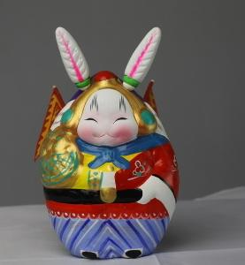

兔爷儿
兔爷最早出现在明末，用来祭月的，明人纪坤（约一六三六年前后在世）的《花王阁剩稿》：“京中秋节多以泥抟兔形，衣冠踞坐如人状，儿女祀而拜之。” 明《北京岁华》记载：“市中以黄土博成，曰兔儿爷，着花袍，高有二三尺者。”
兔爷是北京老传统玩具。
作家老舍在《四世同堂》中这样描写：“脸蛋上没有胭脂，而只在小三瓣嘴上画了一条细线，红的，上了油；两个细长白耳朵上淡淡地描着点浅红；这样，小兔的脸上就带出一种英俊的样子，倒好像是兔儿中的黄天霸似的。它的上身穿着朱红的袍，从腰以下是翠绿的叶与粉红的花，每一个叶折与花瓣都精心地染上鲜明而匀调的彩色，使绿叶红花都闪闪欲动。”
另外，济南府也有一种“兔爷”，外形、制作和北京的兔爷相仿，但两者最大的不同在于济南的兔爷是会动的，脑袋和身体连接地方内部有一根弹簧，摇头晃脑的更加可爱。